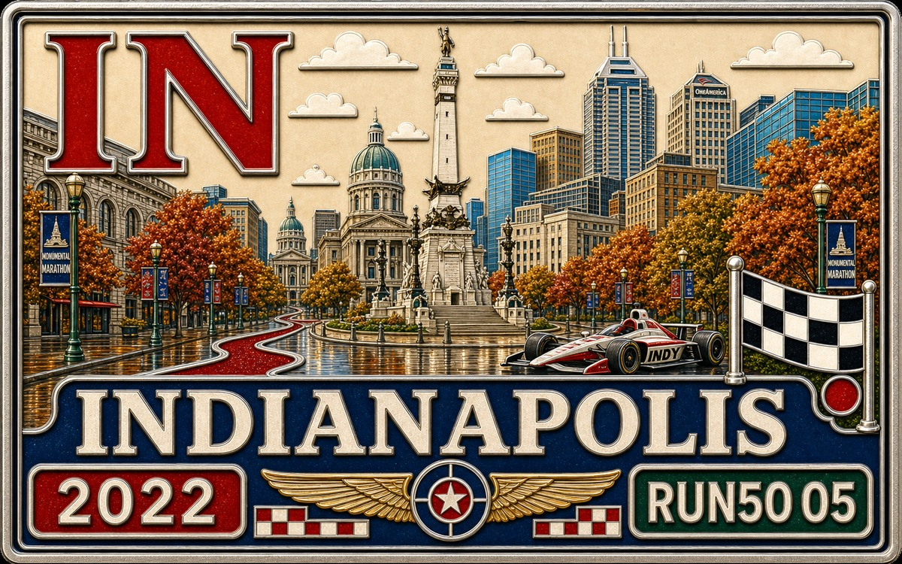

RUN50 DISPATCH · INDIANA
Run50 第5州 · 印第安纳 · 印第安纳波利斯纪念碑马拉松
印第安纳波利斯，印第安纳 · 2022.11.05
Vlog 开场位｜Indiana
OPENING NOTE
Run50第5州印第安纳：2022年11月5日印第安纳波利斯纪念碑马拉松，一场清晨出发、秋雨开跑、最终4小时55分12秒完赛的单日跑马旅程。
本文速记
Run50第5州印第安纳：2022年11月5日印第安纳波利斯纪念碑马拉松，一场清晨出发、秋雨开跑、最终4小时55分12秒完赛的单日跑马旅程。

奖牌质感封面｜Indiana
印地安娜波利斯的Monumental“牦牛”马拉松在我们路村可以说是鼎鼎大名，每次和美国朋友聊天，他们都会兴致勃勃的讨论这项赛事，可以说是有口皆碑，路线平坦并且离我们也近。

Indy @Google · 资料图
我其实一直在犹豫要不要去，主要是担心2022下半年跑量不太够，自从旧金山马拉松回来之后，我基本就处于半退役状态了。
所以，我确实需要一个跑步来激励一下，“牦牛”马就很合适，因为赛道平很快速，还可以帮我再点亮一个全马州。临近比赛两个星期，错过了早鸟价，犹豫了一会，最后还是决定报个名。
报名界面和芝加哥马拉松很像，一看就很高端，再仔细瞅瞅这个马，瞬间又觉得很值得，“牦牛”马还是美国最大的15个马拉松赛事之一，起点和终点都在印第安纳波利斯市中心。并且2022年还是整15届，我喜欢跑在市中心的大型马拉松，这绝对是近距离体验一座城市的绝佳方式；15届的数字也很好，值得一去！

Run Indy @Google · 资料图
这次47去加州开会，所以不能同行，我就压缩了行程，把开车去印城和跑马放在一天，两个多小时的车程并不会很辛苦，就是需要早起，因为起跑在8点，我要保证在这之前到达印城，找到车位，完成包裹领取和热身。

State Capitol @Arsenan
所以比赛日，11月5号这天，我凌晨三点多就出发了，路上车不多，开的挺轻松，很顺利地就抵达了起点边的停车场，还有很多车位。
到的有点早，我也去旁边的市政厅和纪念碑广场转了转，上次是白天来的，印象深刻。这次天光未亮，纪念碑又有了不一样的风貌。

Soldiers and @Arsenan

Soldiers and · 2 @Arsenan
士兵和水手纪念碑，是印第安纳州的标志性建筑之一。它是为了纪念美国内战中牺牲的印第安纳州士兵和水手而建造的，高达86米，是世界上最高的纪念碑之一。纪念碑对面就可以看到市政厅。

State Capitol · 2 @Arsenan

Soldiers and · 3 @Arsenan
快到7点，人渐渐多了起来，我也很顺利的领取了装备，这次因为没有去Expo，所以我选择了当日领取包裹，“牦牛”马这点做的很周到。

Bib Number @Arsenan

Marathon Start @Arsenan

Wave A @Arsenan
领完号码簿后，秋雨来袭，我就躲回了车里，等待起跑，虽然下着雨，但起点边的厕所还是排起了长队，秋雨不凉，还很舒服，这是很棒的跑马温度。

PANG @Arsenan

Marathon Start · 2 @Arsenan

Marathon Start · 3 @Arsenan

Marathon Start · 4 @Arsenan
FIELD NOTE 01
开跑
前言
雨渐渐变小，我也不想躲雨了，这不是跑马者该有的态度，我也加入大部队，在起点等待开跑。

Marathon Start · 5 @Arsenan

Marathon Start · 6 @Arsenan
人群喧闹，大家都跃跃欲试，天也开始慢慢变亮。终于，期待已久的时刻到来了！开跑！
再次跑马总是让人兴奋，但我心里也在打鼓，毕竟快半年没跑这样的距离了。

Marathon Start · 7 @Arsenan

Marathon Start · 8 @Arsenan
好在印地的秋天很舒服，秋雨很清新，秋色很美丽。跑起来很容易就进入状态，步伐也不沉重，没有负担，完赛就好。

Run in Indy @Arsenan

Run in Indy · 2 @Arsenan

Run in Indy · 3 @Arsenan
起始的路线基本都在市区里，跑到2 miles的时候，我们就跑到了士兵和水手纪念碑，这绝对是赛事的亮点，大家都边跑边拿手机拍照，这会儿天亮了很多，和刚才看到的很不样。

Run in Indy · 4 @Arsenan

2 miles @Arsenan

Run near Monument @Arsenan
这边还有摄影师，我也摆了个pose，但是赛后查询，估计是没拍到，有点遗憾。

Run near Monument · 2 @Arsenan

Run near Monument · 3 @Arsenan
跑过纪念碑，我们就跑进了当地的街区，我停在了一座教堂边的补给点上了个厕所，吃了点能量胶，继续开跑。跑马多了就知道，能量胶绝对是个好东西。

Water Station @Arsenan

Water Station · 2 @Arsenan
秋天里的街区很好看，金黄色的落叶在树上，在地上，和秋雨融为一体，踩在上面不会沙沙作响，但也没有很滑。

Run in Indy · 5 @Arsenan

Run in Indy · 6 @Arsenan
中途路过一个华人补给站，让我印象深刻，很有秩序，也很干净，我用中文向他们表示感谢，志愿者们也给我回了一句“加油！“

13.1 and 26.2 @Arsenan

补给站 @Arsenan
这会儿我跟着430的队伍一起，大家互相护理，跑起来很有劲，领头的兔子姐一直在和大家互动，最后还让我们互相自我介绍，来自哪里，跑了多少个马拉松。

4:30 Team @Arsenan
当轮到我，我说出了自己彪炳的战绩，不装了，我摊牌了，大家都是一阵欢呼。虽然那会儿体重超标，没有个传奇的样子，但心里还是不由得窃喜，也立志要好好锻炼身体。

4:30 Team · 2 @Arsenan
430的队伍不好跟，最后我还是不得不和大家说了再见。半马过后，明显感觉到体力没有之前强悍。

Park Run @Arsenan

Park Run · 2 @Arsenan
在一个公园的路线，我就突然想到47经常用到的间歇跑法。随即在谷歌市场下了一个app，临时制定了一个跑2走1的计划。
没想到，这个方法还真管用。跑跑走走很舒服，感谢47给的灵感。

4:45 Pacer @Arsenan
不一会445的兔子追上了我，我觉得自己状态还行，就想跟一跟，不过我确实还是高估了自己，那就Let pacer go！

Back to Downtown @Arsenan

Back to Downtown · 2 @Arsenan

Back to Downtown · 3 @Arsenan
终于回到市区了，看到一个补给点，我赶紧补充一下能量饮料，为最后的冲线做准备。 再次和纪念碑重逢，我知道终点就在不远处了！

Back to Monument @Arsenan

Back to @Arsenan
很惊喜的是在冲线前我还遇见了Fleet Feet的老朋友Myrdin和Justin，搞了一张合影，准备完赛。

Myrdin and Justin @Arsenan
终点近了，我一看手表，这次能进5个小时，虽然放在几年前，这绝对不是个让我满意的成绩，但这一年来，破5似乎已经是个让我难以企及的高度。

Almost There @Arsenan

Almost There · 2 @Arsenan
特别是最近训练一般，体重飙升，4小时55分钟12秒，挺好的。

Finish @Arsenan

Finish · 2 @Arsenan

Medal Time @Arsenan

Photo Time @Arsenan

Medal @Arsenan

Medal · 2 @Arsenan
奖牌还挺好看的，主体元素是印城的市政厅。还有给完赛跑者的纪念品，全马是蓝色的毛线帽，半马是红色，我给47也要了一个。

Medal · 3 @Arsenan

Medal and Hats @Arsenan
跑完简单拉伸了一下，开车去Planet Fitness洗了个澡，又去中餐馆吃了个自助，然后回家，开车途中挺困的，大风又呜呜的吹，我就把车停到了一个加油站，在车里眯了一会儿，就又精神饱满了，顺利回到了路城。

China Buffet @Arsenan

China Buffet · 2 @Arsenan
一日风尘，浓缩的单日跑马旅程。时间虽不长，但时隔接近一年来写这个文，还是意犹未尽。更重要的是，在”牦牛”马，我又找到了坚持跑步的方法，至今依旧受用。
RUN50 FINISH LINE
这一站，收进地图。
Run50第5州印第安纳：2022年11月5日印第安纳波利斯纪念碑马拉松，一场清晨出发、秋雨开跑、最终4小时55分12秒完赛的单日跑马旅程。 跑完这一篇，Run50 的故事又多了一块颜色。
5
RUN50
INDIANA
MARK
州
NOTE
如果这一站也勾起了你的某段跑步记忆，欢迎在公众号留言里接着聊。别太正式，像赛后坐下来喝一口水那样就行。
文字 / 编辑 / 排版 · Arsenan